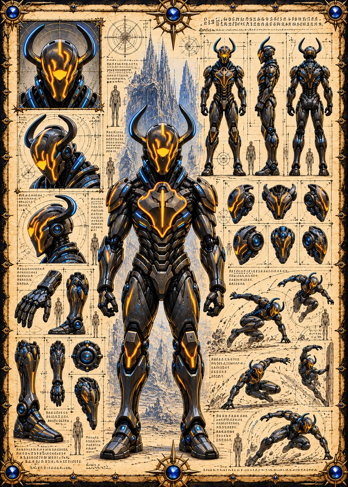

©
©
GENEZYS ARCHIVE · Earth 1 · Legionnaire
Erylon
Xyst Purifier

Archive record
Erylon carries the Void Anchor, the last weapon a North Marauder can choose. It costs Erylon everything, and leaves one enemy with almost nothing. The Longhouse keeps an empty seat for every Marauder who has ever dropped the Anchor.
Combat signature
Void Anchor
100 Cosmara
390 Animus
340 Vitalis
Binds victim to emptiness: Commits self-sacrifice. 1 enemy is left with 1 Vitalis, 1 Cosmara and 0 CD.
Genezys 09:08 ™&©2026LEGIONS
